東京大学 2005年 理科 第1問
問題
x>0に対し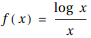とする。
(1) n=1,2,...に対しf(x)の第n次導関数は、数列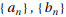を用いて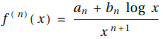to
表されることを示し、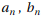に関する漸化式を求めよ。
(2) 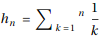とおく。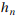を用いての一般項を求めよ。
解答
(1)
n=1のとき
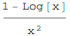
なので、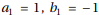として成立。
n=k (k≥2)のとき、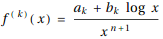が成立すると仮定する。右辺を微分すると
となるから、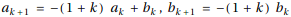として、n=k+1のときも成立する。
よって数学的帰納法によりすべての自然数nに対して題意は示された。
また求める漸化式は
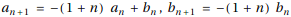
(2)
Mathematica 8では連立漸化式を直接解けない。
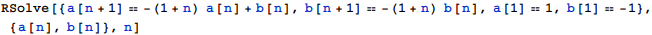
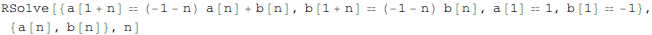
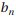については独立しているのでまずについて解く。
これを用いて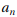について解く。
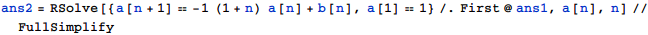
ここでを計算すると、
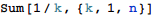
となる。Pochhammer[1,n]=Gamma(1+n)=n!であるから、求める一般項は
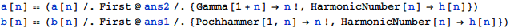
補足・感想
Mathematica 8では連立漸化式を直接には解けなかったが、新しいバージョンでは解けるようになっているかもしれない。